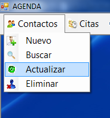
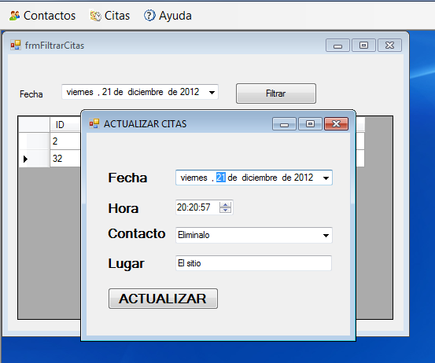

Para actualizar cita Haga clic en Actualizar r
Filtre la búsqueda y/o seleccione la cita se abrirá una ventana con los datos del contacto modifique lo que desee cambiar y haga click enel botón actualizar 